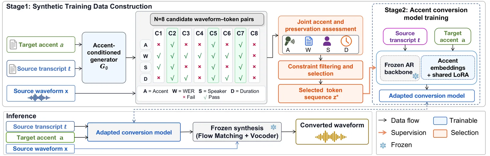
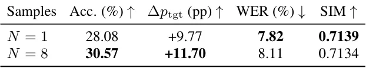
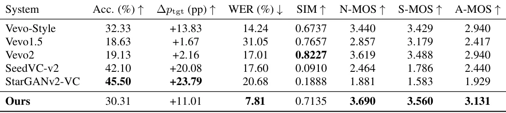

O problema da conversão de sotaque sem dados paralelos
Conversão de sotaque (accent conversion, AC) é a tarefa de modificar o sotaque de uma gravação de fala enquanto se preserva a identidade do falante e o conteúdo linguístico. Idealmente, você treinaria um modelo com gravações da mesma pessoa dizendo a mesma frase em sotaques diferentes. Na prática, esse tipo de dado paralelo é raríssimo.
A alternativa é usar síntese de fala para gerar alvos de treinamento artificiais. Mas aqui surge um problema: geradores de fala modernos são estocásticos. Dado o mesmo texto e a mesma condição de sotaque, cada amostragem produz uma realização ligeiramente diferente. Algumas capturam melhor o sotaque-alvo, outras preservam melhor as características do falante original. Qual delas usar como alvo de treinamento?
A resposta óbvia seria pegar a primeira amostra gerada e seguir em frente. Mas os autores da EURECOM propõem uma abordagem diferente: gerar múltiplas realizações estocásticas para cada condição de origem-sotaque, avaliar todas elas conjuntamente quanto à qualidade do sotaque e à preservação da fonte, e usar a melhor como supervisão. A pergunta central é se esse esforço adicional realmente melhora o modelo final.
A ideia: seleção conjunta de sotaque e preservação
O framework proposto opera em dois estágios. No primeiro, os autores constroem dados sintéticos de treinamento gerando múltiplos candidatos para cada par (transcrição de origem, sotaque-alvo). Cada candidato é uma forma de onda de áudio acompanhada de uma sequência de tokens discretos que representam conteúdo linguístico, prosódia e estilo de fala.
Esses candidatos são então avaliados em quatro dimensões: (A) a forma de onda exibe o sotaque-alvo solicitado? (W) a transcrição automática corresponde ao texto original? (S) a similaridade com o falante original é alta? (D) a duração está dentro de limites razoáveis? Candidatos que falham em qualquer critério são descartados. Entre os que passam, o sistema escolhe aquele com a maior probabilidade de sotaque-alvo, medida por um classificador de sotaque treinado separadamente.
No segundo estágio, a sequência de tokens associada ao candidato selecionado é usada como alvo de supervisão para treinar o modelo de conversão final. Esse modelo é autorregressivo: gera tokens condicionados na transcrição e no rótulo categórico do sotaque-alvo. A síntese acústica subsequente é congelada e usa a forma de onda original apenas para condicionar o timbre da voz.

Construção do gerador categórico
O gerador categórico Gϕ é construído em duas etapas. Primeiro, os autores usam o modelo Vevo2 pré-treinado em modo de geração condicionada por referência. Dado um par (referência de áudio no sotaque-alvo, sua transcrição) e a transcrição de origem, o Vevo2 gera uma sequência de tokens de conteúdo-estilo que captura o conteúdo linguístico da origem enquanto herda informações de sotaque e estilo da referência. A síntese acústica usa a forma de onda original para preservar o timbre do falante.
Essas sequências de tokens selecionadas servem como alvos de treinamento para a segunda etapa: adaptar o backbone autorregressivo do Vevo2 para controle categórico de sotaque. Cada sotaque-alvo é representado por uma sequência treinável de 32 embeddings de sotaque. Módulos LoRA compartilhados de rank 32 adaptam as projeções de query, key, value e output. Primeiro, apenas os embeddings de sotaque são otimizados; depois, embeddings e LoRA são ajustados conjuntamente via cross-entropy autorregressiva. Todos os demais parâmetros do backbone permanecem congelados.
Após seleção de checkpoint no conjunto de desenvolvimento, Gϕ é fixado. Agora, dado um par (transcrição, rótulo de sotaque), ele pode amostrar sequências de tokens de conteúdo-estilo sem precisar de áudio de referência. Essa capacidade de amostragem estocástica é o que permite gerar múltiplos candidatos para a mesma condição.
Avaliação e seleção de candidatos
Para cada condição (transcrição de origem, sotaque-alvo), o sistema gera N=8 pares de forma de onda e sequência de tokens. Cada forma de onda é avaliada em quatro critérios. O critério de sotaque (A) usa um classificador de sotaque treinado separadamente: a probabilidade prevista para o sotaque-alvo deve exceder um limiar. O critério de taxa de erro de palavra (W) transcreve automaticamente a forma de onda e compara com a transcrição original; o WER deve ficar abaixo de um limite. O critério de similaridade de falante (S) compara embeddings de falante extraídos da forma de onda gerada e da original usando WavLM; a similaridade cosseno deve superar um patamar. O critério de duração (D) verifica se a duração está dentro de 0,5 a 2,0 vezes a duração original.
Candidatos que falham em qualquer critério são descartados. Entre os que passam, o sistema seleciona aquele com a maior probabilidade de sotaque-alvo segundo o classificador. Essa probabilidade atua como proxy da qualidade de realização do sotaque na forma de onda. A sequência de tokens associada a essa forma de onda selecionada é então usada como alvo de supervisão para treinar o modelo de conversão final.
Esse esquema de seleção é deliberadamente conservador: prefere descartar condições ambíguas a usar alvos de baixa qualidade. No pool completo de construção, apenas 22,18% das condições têm um primeiro candidato viável. Com oito gerações, a cobertura sobe para 54,29%. Mas o aumento de cobertura por si só não prova benefício downstream. Para isolar o efeito da seleção, os autores comparam N=1 e N=8 nas mesmas 6.600 condições onde o primeiro candidato é viável.
Treinamento do modelo de conversão final
O modelo de conversão final pθ é treinado para gerar sequências de tokens de conteúdo-estilo condicionadas na transcrição de origem e no rótulo categórico de sotaque-alvo. A arquitetura é a mesma do gerador categórico Gϕ: embeddings de sotaque e módulos LoRA adaptam o backbone autorregressivo congelado. A diferença está na supervisão: agora os alvos são as sequências de tokens selecionadas pelo processo de avaliação conjunta.
Durante a inferência, pθ gera uma única sequência de tokens dado o par (transcrição, sotaque-alvo). Essa sequência é então passada para a síntese acústica congelada, que usa a forma de onda de origem apenas para condicionar o timbre. Não há necessidade de áudio de referência de sotaque-alvo nem de geração de múltiplos candidatos na inferência. Todo o custo adicional de amostragem e seleção fica restrito ao treinamento.
Os autores treinam três modelos independentes com sementes aleatórias diferentes para cada configuração (N=1 e N=8). Isso permite calcular médias e avaliar a consistência dos ganhos. A otimização usa cross-entropy autorregressiva sobre as sequências de tokens, com warm-start categórico idêntico para ambas as configurações dentro de cada semente.
Resultados: múltiplas amostras melhoram o sotaque
Na comparação controlada entre N=1 e N=8, a supervisão com oito amostras aumenta a precisão média de classificação de sotaque-alvo em 2,49 pontos percentuais. A métrica Δptgt, que mede a diferença entre a probabilidade do sotaque-alvo e a do sotaque de origem, aumenta em 1,93 pontos percentuais. Esses ganhos são consistentes nas três sementes de treinamento.
A taxa de erro de palavra (WER) aumenta ligeiramente, de 7,52% para 7,81%, uma diferença de 0,29 pontos percentuais. A similaridade de falante (SIM), medida por embeddings WavLM, permanece praticamente inalterada: 0,7139 para N=1 versus 0,7134 para N=8. Esses resultados mostram que a seleção entre múltiplas realizações estocásticas melhora a evidência de sotaque-alvo medida pelo probe de classificação, com impacto mínimo na preservação do falante e pequeno aumento no erro de transcrição.
Os autores também testam estratégias alternativas de uso dos candidatos viáveis. Random Near-Best amostra aleatoriamente entre candidatos dentro de 0,05 da maior probabilidade de sotaque. Soft Top-2 combina as perdas dos dois candidatos de maior rank. Soft Near-Best aplica soft-min aos candidatos dentro da margem de 0,05. A estratégia Selected Top-1, que usa apenas o candidato de maior probabilidade de sotaque, alcança a maior precisão média de sotaque e o menor WER médio, embora Soft Top-2 produza a maior similaridade de falante.

Desempenho geral de conversão
Na avaliação completa sobre o conjunto AC-Eval3K, o sistema proposto alcança WER de 7,81%, a mais baixa entre os sistemas avaliados. A precisão de classificação de sotaque-alvo é de 30,31%, com Δptgt de +11,01 pontos percentuais. Sistemas de referência como Vevo-Style, SeedVC-v2 e StarGANv2-VC obtêm pontuações automáticas de sotaque-alvo mais altas, enquanto Vevo2 alcança a maior similaridade de falante (SIM). Isso reflete diferentes pontos de operação no trade-off entre sotaque, conteúdo e preservação de falante, em vez de dominância de um único sistema em todas as métricas.
Nos testes de escuta, o sistema proposto obtém as maiores médias observadas em todas as três medidas perceptuais: naturalidade (N-MOS de 3,690), similaridade com o falante original (S-MOS de 3,560) e similaridade com o sotaque-alvo (A-MOS de 3,131). Esses resultados de MOS são médias descritivas sem estimativas de incerteza.
A avaliação é realizada em seis sotaques-alvo, mas os autores não especificam quais. Os sistemas externos não foram treinados ou avaliados sob condições idênticas ao sistema proposto; todos usam o mesmo pipeline de avaliação, mas diferem em dados de treinamento, arquitetura e protocolo de inferência. Isso limita a interpretação das comparações diretas.

O que fica em aberto
A avaliação é limitada a seis sotaques-alvo e a um único conjunto de dados de avaliação. Os autores não reportam quais sotaques foram testados nem o tamanho do conjunto de treinamento sintético final. A comparação com sistemas externos é informativa, mas não controlada: cada sistema foi treinado com dados diferentes, usa arquiteturas diferentes e pode ter acesso a informações diferentes na inferência.
O experimento controlado entre N=1 e N=8 usa apenas 6.600 das 29.754 condições de origem-sotaque disponíveis, aquelas onde o primeiro candidato já é viável. Isso garante comparação justa, mas também significa que o benefício da seleção é testado em um subconjunto potencialmente mais fácil. O impacto da seleção em condições onde o primeiro candidato falha não é diretamente avaliado.
O custo computacional de gerar e avaliar oito candidatos por condição de treinamento é significativo, mas não é quantificado. A seleção requer um classificador de sotaque, um modelo de ASR, um extrator de embeddings de falante e síntese acústica para cada candidato. Esse overhead é aceitável no treinamento, mas a viabilidade em cenários de dados muito maiores permanece uma questão aberta.
Os autores mencionam que trabalhos futuros estenderão a avaliação a configurações de sotaque mais amplas e avaliarão independentemente o efeito multi-amostra pareado. A generalização para sotaques não vistos durante o treinamento, a robustez a ruído e reverberação, e a aplicação a outras tarefas de conversão de fala são direções naturais que não foram exploradas neste trabalho.
Por que isso importa
Conversão de sotaque tem aplicações em acessibilidade, dublagem, ensino de línguas e preservação de privacidade de fala. A escassez de dados paralelos é o principal obstáculo prático, e supervisão sintética é a alternativa viável. Este trabalho mostra que a qualidade da supervisão sintética pode ser melhorada não apenas gerando mais dados, mas selecionando melhor entre realizações estocásticas da mesma condição.
A formulação do problema como seleção multi-amostra é geral e pode ser aplicada a outras tarefas de conversão de fala onde geradores estocásticos são usados para construir alvos de treinamento. A ideia de avaliar candidatos conjuntamente em múltiplas dimensões (sotaque, conteúdo, falante) e transferir a seleção do nível de forma de onda para o nível de representação discreta é uma contribuição metodológica que vai além do domínio específico de conversão de sotaque.
Os resultados mostram que o ganho de 2,49 pontos percentuais em precisão de sotaque vem com um custo modesto: aumento de 0,29 pontos percentuais em WER e similaridade de falante praticamente inalterada. Esse trade-off é favorável, especialmente considerando que o custo adicional de amostragem e seleção ocorre apenas no treinamento, não na inferência. O modelo final usa apenas transcrição e rótulo categórico de sotaque, sem necessidade de áudio de referência.
O que fica
- Gerar oito candidatos sintéticos e escolher o melhor aumenta a precisão de sotaque em 2,49 pontos percentuais, com impacto mínimo na preservação do falante.
- O método alcança 7,81% de taxa de erro de palavra, a mais baixa entre os sistemas avaliados, e as maiores notas em testes de escuta.
- A avaliação é limitada a seis sotaques-alvo e não compara todos os sistemas sob condições idênticas de treinamento.
Paper original: Multi-sample Synthetic Supervision for Accent Conversion
Comentários
Nenhum comentário ainda. Seja o primeiro.